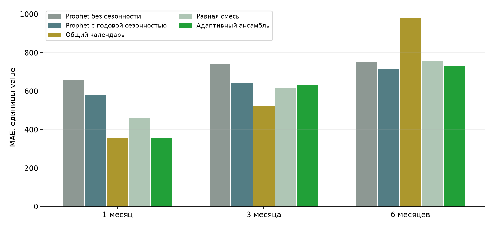
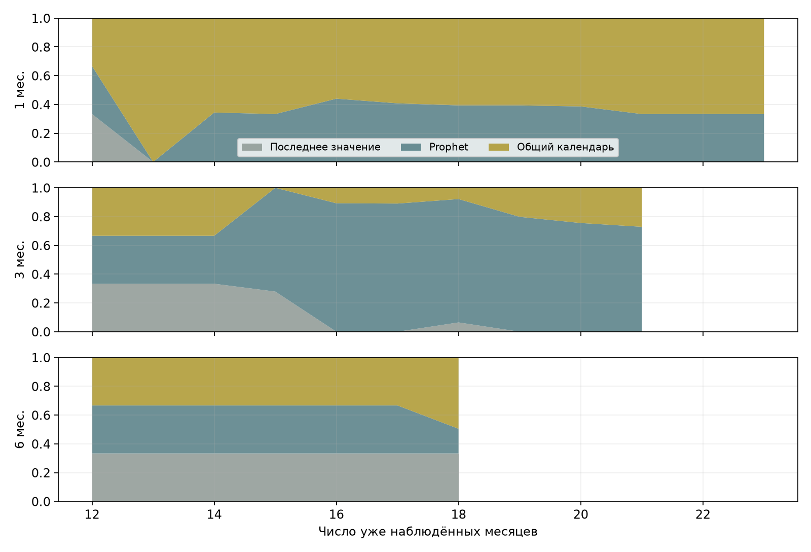
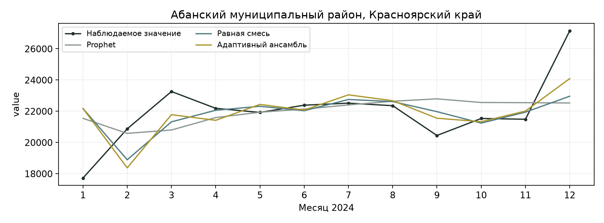
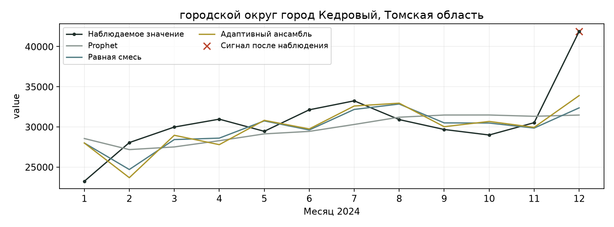
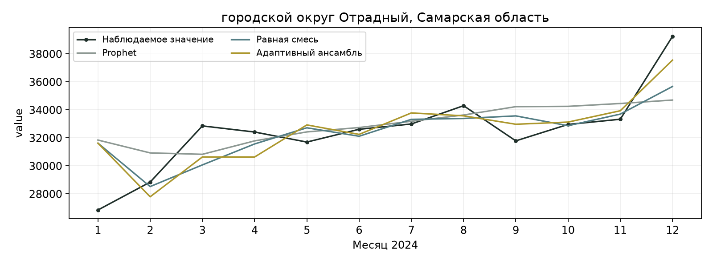

СБЕРИНДЕКС 2026 / ПРОГНОЗИРОВАНИЕ
Пульс
муниципалитетов
Общий календарь, адаптивный прогноз и проверка необычных отклонений.
Артур Шафиев
Средняя MAE в июле-декабре 2024
К нашему Prophet с годовой сезонностью
Месяцев в основной оценке
Ретроспективная проверка на известном 2024 году. На три месяца ансамбль уступает равной смеси; предупреждение до экономического события не подтверждено.
Результат и границы проверки
Основной период: июль-декабрь 2024. Средняя MAE основного ансамбля - 573.346. Снижение 19.94% к нашему Prophet без сезонности и 11.12% к нашему Prophet с годовой сезонностью.
Это ретроспективная проверка на уже известном 2024 году. Разбиение и прогнозы причинны, но выбор подхода сделан после изучения более ранних результатов на том же периоде. Конфигурация официального Prophet жюри неизвестна.
По исходной MAE условный интервал разницы с годовым Prophet положительный. По нормированной MAE он пересекает ноль: [-0.004737; 0.005733]. Значимого преимущества в этой нормировке не установлено.
На три месяца ансамбль проигрывает равной смеси. Варианты с весами по категориям и акцентом на недавние ошибки не прошли заранее заданные правила замены. Основной ансамбль сохранили по исходным правилам; вариант с акцентом на недавние ошибки численно лучше него.
1. Методология - 10%
Данные: 303126 строк, 2190 муниципалитетов, шесть категорий, январь 2023 - декабрь 2024. Не более 24 точек на ряд. В файле показатель value; соответствие consumption и единицам рублей явно не подтверждено. Ошибки указаны в единицах value.
Общий календарь построен по 1179 другим МО и только по 2023 году. Прогнозы LastValue, Prophet и SharedSeasonal взяты точно из зафиксированного кэша исходного масштабного сравнения. Для основного ансамбля прежние 256 оценочных МО разделены по SHA на 128 для обучения весов и 128 для оценки. Все прежние использования данных раскрыты; новые группы не создают нового слепого теста. Это назначенные группы; реально доступные обучающие ошибки поступили от 126 из 128 МО (756 рядов).
Архитектура: известный префикс -> три прогноза -> причинные веса по горизонту -> прогноз; после наблюдения h1 -> остаток -> детектор -> контекст события. Новости и сигнал тревоги численно не меняют текущий прогноз. Данные связей/доступности рынка не использованы: дата доступности снимков неизвестна.
2. Прогнозирование - 20%
OnlineHorizonBlend - неотрицательная смесь LastValue, Prophet и SharedSeasonal. Стартовые доли по 1/3. На каждой дате и отдельно для h1/h3/h6 решается выпуклая задача минимизации macro MAE по другой группе МО с L1 штрафом 0.05 за отклонение от стартовых весов.
Для текущего числа наблюдённых месяцев n используются сохранённые прогнозы только с target_index < n и prefix_n < n. Целевой месяц ошибки уже наблюдён, а её прогноз выпущен раньше текущей даты. Нормировка - MAE стартовой смеси с нижней границей 1 в единицах value. У h6 пять из шести июль-декабрьских прогнозов остаются стартовой смесью, только декабрьский использует созревшие h6 ошибки.
Prophet: 3 changepoints, prior scale 0.05, без сезонности и uncertainty samples. Отдельный ProphetYearly: Fourier order 2, prior 0.1. SharedSeasonal: log1p, медианный общий календарь, локальный тренд последних 6 точек с затуханием 0.8. В старом EqualBlend сначала усреднялись сырые компоненты, затем обрезались нулём. Новый ClippedEqualBlend усредняет уже обрезанные компоненты.
Выигрыш относится к среднему по горизонтам. На h3 ансамбль хуже равной смеси: 633.232 против 617.284; SharedSeasonal даёт 522.458. За весь 2024 h3 тоже хуже смеси (651.055 против 642.972). На h3 проигрыш смеси есть в 4 из 6 категорий. Преимущество по совокупной MAE в исходных единицах в основном дают h1 и декабрьский h6; пять других h6 прогнозов не обучались и совпадают со стартовой смесью. Крупные категории определяют большую часть native ошибки.
На этих оценочных парах EqualBlend и ClippedEqualBlend численно совпали до 1e-13: обрезка компонентов не изменила результат. Их определения всё равно различаются.
Вторичные периоды: в январе-июне средняя MAE основного ансамбля 604.668 против 596.874 у равной смеси; на 3 месяца 669.241 против 487.157 у Prophet. За весь 2024 на 3 месяца MAE основного ансамбля 651.055 против 639.950 у Prophet и 642.972 у равной смеси. Основное преимущество не переносится на каждый период и горизонт.
На 12 месяцев основной ансамбль не запускался: протокол содержит только горизонты 1/3/6 месяцев. Его качество на год и прогноз на декабрь 2025 не заявляются.
Сохранённая годовая диагностика относится к другой панели: 1494 ряда, одна дата выпуска в конце 2023 года, целевой декабрь 2024. До наблюдения декабря эта ошибка была недоступна для обучения весов. В конце декабря она уже наблюдена, но основной ансамбль на год не запускался. Диагностика не подтверждает качество основного ансамбля или устойчивость годового прогноза.
Июль-декабрь 2024: среднее по 1/3/6 месяцам
| Метод | MAE | Нормированная MAE |
|---|---|---|
| Адаптивный ансамбль | 573.346210 | 0.128016 |
| Равная смесь (исходное определение) | 610.069927 | 0.129064 |
| Равная смесь | 610.069927 | 0.129064 |
| Общий календарь | 620.632723 | 0.145536 |
| Prophet с годовой сезонностью | 645.057178 | 0.128626 |
| Prophet | 716.128537 | 0.152770 |
| Последнее значение | 886.819019 | 0.173434 |
Июль-декабрь 2024: по горизонтам
| Метод | h1 MAE | h3 MAE | h6 MAE |
|---|---|---|---|
| Адаптивный ансамбль | 357.256695 | 633.231714 | 729.550222 |
| Равная смесь | 457.347289 | 617.283739 | 755.578752 |
| Общий календарь | 357.854225 | 522.458406 | 981.585537 |
| Prophet | 657.687577 | 738.156585 | 752.541450 |
| Prophet с годовой сезонностью | 581.760607 | 639.996471 | 713.414454 |
Январь-июнь 2024: дополнительный период
| Метод | 1 месяц | 3 месяца | 6 месяцев | Среднее |
|---|---|---|---|---|
| Адаптивный ансамбль | 549.303 | 669.241 | 595.461 | 604.668 |
| Равная смесь | 522.397 | 672.763 | 595.461 | 596.874 |
| Общий календарь | 496.614 | 960.474 | 599.129 | 685.406 |
| Prophet с годовой сезонностью | 840.318 | 941.570 | 2715.226 | 1499.038 |
| Prophet | 578.066 | 487.157 | 773.983 | 613.069 |
| Последнее значение | 750.632 | 830.304 | 683.886 | 754.941 |
Весь 2024 год: дополнительный период
| Метод | 1 месяц | 3 месяца | 6 месяцев | Среднее |
|---|---|---|---|---|
| Адаптивный ансамбль | 454.362 | 651.055 | 710.778 | 605.399 |
| Равная смесь | 490.740 | 642.972 | 733.088 | 622.267 |
| Общий календарь | 427.816 | 701.957 | 928.362 | 686.045 |
| Prophet с годовой сезонностью | 713.116 | 767.256 | 996.786 | 825.720 |
| Prophet | 619.076 | 639.950 | 755.150 | 671.392 |
| Последнее значение | 697.292 | 863.027 | 1072.903 | 877.741 |
Отдельная диагностика: 12 месяцев
| Метод | MAE, 12 месяцев | Нормированная MAE |
|---|---|---|
| Равная смесь (исходное определение) | 976.272 | 0.221059 |
| Prophet | 934.814 | 0.245983 |
| Общий календарь | 916.682 | 0.232564 |
| Календарь с половинной поправкой | 835.372 | 0.231085 |

3. Структурные изменения - 20%
Shewhart остаётся отдельным детектором. Порог 3.162278 выбран только по h1 остаткам учебных МО января-июня 2024 при бюджете исходных тревог <=10%. Калибровочная частота 8.53%; на оценочных МО июля-декабря 3.38% (151/4464). Это частота сигналов, не FPR: истинных меток шоков нет.
Синтетика: step/ramp/spike, знаки +/- и величины 1/2/3 sigma, четыре месяца сентября-декабря. Возмущается только сохранённый остаток; прогноз не переобучается. Дополнительное попадание измерено относительно исходного потока, задержка необнаружения - 4 месяца. Это диагностика чувствительности, не подтверждение раннего экономического предупреждения.
На отдельной диагностической панели Shewhart, EWMA, ResetCUSUM со сбросом, BOCPD и PrefixPELT сравнивались при общем калибровочном бюджете 10%. Shewhart имел лучший заранее заданный synthetic paired gain 0.369037; тестовые результаты не использовались для его замены. Диагностика использовала другую модель и панели; её результаты не объединяются с основным ансамблем.
Проверка на отдельной диагностической панели не подтвердила лидерство Shewhart: средний дополнительный выигрыш 0.166 против 0.213 у ResetCUSUM и 0.182 у EWMA. Частота сигналов Shewhart выросла с 6.20% до 17.51%. Выбор сохранён по калибровочному правилу; проверочная часть не использована для замены детектора.
Основной ансамбль: синтетическая проверка Shewhart
| Тип изменения | Дополнительное попадание | Задержка с штрафом | Примеры |
|---|---|---|---|
| ramp | 0.260977 | 3.625448 | 4464 |
| spike | 0.194892 | 3.220430 | 4464 |
| step | 0.458557 | 2.685932 | 4464 |
Отдельная диагностическая панель: сравнение пяти детекторов
Таблица сравнения ниже относится только к отдельной диагностической панели и её прогнозу/панелям. Gain - средний paired gain по трём типам синтетического изменения, не вероятность шока. Частота тревог в неизменённом потоке не считается ложноположительной долей без истинных меток.
| Детектор | Отклик: калибровка | Отклик: проверка | Тревоги: калибровка | Тревоги: проверка |
|---|---|---|---|---|
| Shewhart | 0.369 | 0.166 | 6.20% | 17.51% |
| EWMA | 0.337 | 0.182 | 9.67% | 31.66% |
| ResetCUSUM | 0.287 | 0.213 | 8.24% | 20.86% |
| BOCPD | 0.089 | 0.093 | 9.96% | 1.95% |
| PrefixPELT | 0.232 | 0.114 | 8.80% | 18.68% |
4. Фундаментальные модели - 15%
На отдельной диагностической панели локально проверен Chronos-2 amazon/chronos-2, около 120M параметров, revision 29ec3766d36d6f73f0696f85560a422f50e8498c, Apache-2.0. 1080 вызовов модели, CPU float32, медиана, без дообучения. Экономические данные в сервис прогнозирования не передавались.
Plain прогнозирует отдельный ряд. CalendarCross использует известный календарь sin/cos и фиксированные группы по 16 МО внутри категории. В этом варианте одновременно меняются два фактора; их отдельный вклад не установлен. На диагностической панели оба варианта уступили Prophet по средней нормированной MAE. В основной ансамбль они не включены и на его панели не перезапускались. Интервалы coverage80 сохранены отдельно.
| Метод | Нормированная MAE |
|---|---|
| Chronos-2: календарь и группы | 0.235703 |
| Chronos-2: отдельный ряд | 0.245232 |
| Prophet | 0.182116 |
5. Новости - 15%
Добавление восьми опубликованных решений Банка России по ставке увеличило нормированную MAE с 0.115712 до 0.307236 на исходной панели. На дату прогноза использовались только уже опубликованные решения. Прироста точности от новостей не получено.
Для объяснения сигнала есть официальные сообщения МЧС об Орске 6 апреля 2024, Оренбурге 7 апреля, Курской области 7 и 9 августа. Это внешние события, не истинные метки изменения расходов. Орск ID1673 относится к прежнему учебному пулу. У 33 МО Курской области в исходном файле расходов 0 строк, проверка этого кейса невозможна.
Сохранённый модуль v2_news.py связывает доступную на дату публикацию с точной территорией. Он даёт аналитический контекст, не прогнозный выигрыш; основной ансамбль не использует его для изменения численного прогноза. Часовой пояс публикаций и охват воздействия не подтверждены.
6. Метрики - 10%
Основная проверка - цели июль-декабрь 2024, h1/h3/h6, по шесть возможных целевых месяцев на каждый h. Из 128 назначенных оценочных МО в объединении есть 125, но по горизонтам фактически 124/124/125 МО и 744/744/750 рядов. Детектор использует 744 ряда. Всего 13404 общих пар на метод. Усредняются разные наборы территорий между h; внутри каждого h у всех методов одинаковые пары. Пропуски не заполнены и не заменены. Обучающие ошибки реально доступны для 126 из 128 МО.
Macro MAE: среднее по датам внутри ряда, затем равный вес рядов, затем равный вес горизонтов. Все категории, включая агрегат Все категории, имеют равный вес; категории не являются независимыми свидетельствами. Bias в таблице по парам. Нормированная MAE делится на max(median(abs(собственного Jan-Jun2023)),1); это не MAPE.
CI95: 2000 парных пересэмплирований муниципалитетов, с сохранением категорий и горизонтов, при фиксированных выученных весах. Интервал условен на известных 2024 и данных; пространственная зависимость и неопределённость обучения весов не учтены. Независимая проверка в Cloud не выполнена.
Нормированная MAE ансамбля ниже Prophet без сезонности. Преимущество перед годовым Prophet по этой метрике не подтверждено: CI95 включает ноль. Основной критерий относится к MAE в исходных единицах с равным весом рядов. После просмотра результата метрика не менялась.
Положительное среднее не означает улучшение каждого горизонта: h3 проигрывает смеси; h6 выиграл за счёт одного декабря. Scaled прирост к смеси невелик, нижний конец CI95 около 0.0000358. Метрика и горизонты не заменены после результата.
| h | МО | Ряды | Пары | Даты выпуска |
|---|---|---|---|---|
| 1 | 124 | 744 | 4464 | 6 |
| 3 | 124 | 744 | 4464 | 6 |
| 6 | 125 | 750 | 4476 | 6 |
| Контроль | MAE контроля - ансамбля | Условный CI95 |
|---|---|---|
| Prophet | 142.782327 | [126.718630; 159.381720] |
| Prophet с годовой сезонностью | 71.710967 | [49.486930; 91.996589] |
| Равная смесь | 36.723716 | [32.048871; 41.932595] |
| Равная смесь (исходное определение) | 36.723716 | [32.048871; 41.932595] |
7. Интерпретация и воспроизводимость - 10%
Примеры выбраны заранее заданным порядком, без отбора по качеству: Абанский муниципальный район (Красноярский край, ID683), город Кедровый (Томская область, ID2145) и Отрадный (Самарская область, ID1879). Названия взяты по точному ID из сохранённой исторической версии муниципального справочника.
Во всех трёх примерах виден декабрьский рост наблюдаемого показателя. Это календарная закономерность примеров, а не установленная причина изменения спроса. Сигнал в Кедровом после наблюдения требует содержательной проверки; связь с внешним экономическим событием не подтверждена.
В комплект входят 36 сохранённых наблюдений этих примеров и соответствующие прогнозы. Скрипт build_report_figures.py перестраивает графики по этим точкам, METRICS.csv и WEIGHTS_BY_ORIGIN.csv; моделей он не обучает.
Полная пересборка из сырья через новый кэш в поставленном виде не выполнялась. Проверенная среда - Windows x64, Python 3.12. Linux и независимая проверка в Cloud не проверены. Адаптер для последнего снимка принимает новый кэш только при совпадении рецепта и контрольной суммы сырья. Его SHA и происхождение записываются отдельно; численного совпадения с исходным кэшем мы не предполагаем.
Сырой датасет и полный индивидуальный кэш в комплект не входят. В README и sources приведены ссылки на официальный ZIP и данные, точная контрольная сумма сырья, инструкции и сторонние лицензии. Собственный код: © Артур Шафиев, все права защищены.




Как читать результаты
Основной метод - адаптивный ансамбль. В отчёте отдельно показаны диагностика на другой панели, первое сравнение с новостями и две попытки улучшить прогноз на три месяца. Их результаты не подменяют основную оценку. Точное соответствие названий и технических версий сохранено в METHOD_ALIASES.json.
MAE - средняя абсолютная ошибка. В исходных единицах (native) она выражена в value. Macro означает равный вес рядов, затем горизонтов; агрегат «Все категории» также входит с равным весом. Нормированная MAE делится на медиану собственных значений первых шести месяцев 2023 года с нижней границей 1; это не процентная ошибка MAPE.
Дата выпуска (origin) - момент, когда известны только предыдущие месяцы. prefix_n - их число. target_index - номер целевого месяца; индекс 0 соответствует январю 2023. Созревшая ошибка - ошибка прогноза, целевой месяц которого уже наблюдён. Научный запуск закрыт и не перезаписывается. Полный независимый повтор означает пересборку всей цепочки в новой среде; он пока не выполнен.
Попытки улучшить горизонт 3 месяца
Вариант с отдельными весами по категориям: общая MAE 586.768, на 3 месяца 673.497; улучшения нет.
Вариант с акцентом на недавние ошибки: общая MAE 572.226, на 3 месяца 629.872. Это лучше результата основного ансамбля по обоим показателям, но хуже равной смеси на 3 месяца (617.284). Условный 95% интервал разницы MAE равной смеси минус MAE варианта с акцентом на недавние ошибки целиком отрицательный [-23.763; -1.570].
Правило для варианта с акцентом на недавние ошибки требовало на 3 месяца превзойти одновременно основной ансамбль и равную смесь. Оно не выполнено. Основной ансамбль тоже слабее равной смеси на этом горизонте (633.232), но его исходный критерий был другим. Менять правила или выбирать новую смесь после просмотра этих чисел нельзя; основной ансамбль остаётся кандидатом.
Первичные источники
Официальный конкурс: https://sber.ru/sberindex/konkurs_sberindex
Положение: https://sber.ru/common/assets/sber/sberindex_polozhenie_o_konkurse.pdf
Описание данных: https://sberindex.ru/ru/research/data-sense-opisanie-nabora-dannikh-khakatona-sberindeksa-po-munitsipalnim-dannim
МЧС Орск: https://56.mchs.gov.ru/deyatelnost/press-centr/novosti/5249015
МЧС Оренбург: https://en.mchs.gov.ru/for-mass-media/novosti/5250469
МЧС Курск: https://46.mchs.gov.ru/deyatelnost/press-centr/vse_novosti/5337327
МЧС федеральная ЧС: https://mchs.gov.ru/deyatelnost/press-centr/novosti/5338284
Chronos-2: https://huggingface.co/amazon/chronos-2 ; Prophet: https://facebook.github.io/prophet/ ; обучение смеси - новая конкурсная реализация.